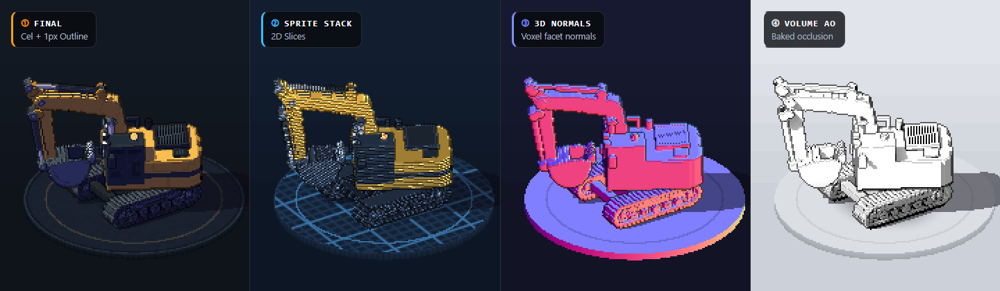
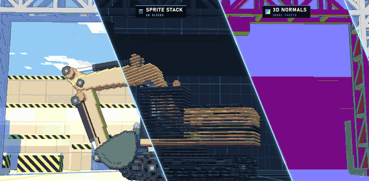

Zero low-pitch cracks
Classic 2D card stacks split open at low camera angles and turn 1-voxel blades into dotted lines. T3 raymarches the real 3D volume of every part with an exact DDA inside its oriented box, so there are no slices to crack.
An agent skill that raymarches every articulated voxel part inside its own oriented box:
T3 OBB Raymarching + Inverse Deform + SVOX CLI + 4 Engine Adapters.
Sprite-stacking charm, real 3D volumes, pixel-snapped and outlined at 1 px — with zero slice cracks at any pitch.

Your browser has WebGL2 disabled, so here is a still of the four live view modes.
The skill is a single folder with a SKILL.md. Install it however your agent prefers.
$ npx skills add yskim3271/hybrid-voxel-spriteWorks with Claude Code, Antigravity, Codex / Open Agents, Cursor and any agent that reads SKILL.md.
> /plugin marketplace add yskim3271/hybrid-voxel-sprite
> /plugin install hybrid-voxel-spriteRun both commands inside Claude Code. The repo ships a .claude-plugin/ marketplace manifest.
$ git clone https://github.com/yskim3271/hybrid-voxel-sprite
$ cp -r hybrid-voxel-sprite/skills/hybrid-voxel-sprite ~/.claude/skills/Other agents: ~/.gemini/config/skills/ (Antigravity) · ~/.agents/skills/ (Codex / Open Agents).
Classic 2D card stacks split open at low camera angles and turn 1-voxel blades into dotted lines. T3 raymarches the real 3D volume of every part with an exact DDA inside its oriented box, so there are no slices to crack.
The camera and the root snap to a virtual FBO texel grid, so sub-texel motion never makes edge pixels shimmer.
Squash, twist, shear and wave are undone per sample, with spring secondary motion. No UVs, retopology or skin weights.
6-slot emissive lights with a glow halo · D24 depth-bucket tie-break (0 px reorder diff) · PerspectiveCamera 3D-world MRT hybrid · live SPRITE STACK inspection mode.
Two-pass MRT G-buffer + 1px outline, plus the v1.1 Perspective 3D-world hybrid.
✅ Verified · G1–G4 PassForward+ and Mobile (Vulkan). Both renderers produce identical pixels.
✅ Verified · G1–G4 PassRenderGraph ScriptableRendererFeature on D3D11 and D3D12, 0.63–0.75 ms.
SVOX asset-extraction bridge: model in Blender, export a bundle, validate with 0 errors.
Four articulated vehicles, 39 parts and 166,290 voxels, composited into a real-time Three.js 3D world. Each diagonal band reveals a different live view of the same frame.

# 3-part reference bundle, already baked
$ python scripts/svox_cli.py init-demo --out build/demo
# MagicaVoxel .vox (one part per shape node)
$ python scripts/svox_cli.py from-vox --input hero.vox --out build/hero --bake
# slice-strip PNG → bundle
$ python scripts/svox_cli.py from-strip --input cape.png --size-x 12 --size-y 4 --size-z 16 --part-name cape --out build/hero
# 3x3x3 Sobel normals + hemisphere AO
$ python scripts/svox_cli.py bake-normal-ao --bundle build/hero
# schema, thin parts, ground, loop seam, undeform(deform(p))
$ python scripts/svox_cli.py validate --bundle build/hero --output build/report.json
# strip_x PNG | grid_2d PNG | raw_3d .bin
$ python scripts/svox_cli.py pack-atlas --bundle build/hero --format raw_3d --out build/raw3d0 crack texels / 192 renders
0 / 0 / 0 px (off: 9–21k px)
max error 1.8e-15 (< 1e-5)
z 0.000 · seam 2e-15 · 0 px
per frame at 640×360 ×3 on a GTX 1080 (3-part reference / 13-part knight).
Honest positioning: built for isometric, top-down and side-view games with many pixel-scale sprites. Full-screen close-ups on low-end mobile are not its strength — cost scales with covered virtual pixels × march length.